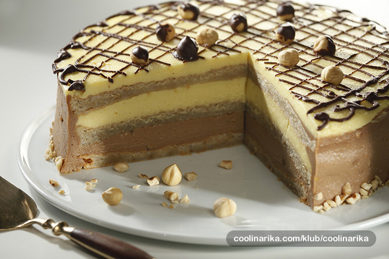

Milka torta
Sastojci
Za kore:
21 bjelanjaka
450 g šećera
300 g lješnjaka
3 žlice pšeničnog oštrog brašna
Za kremu:
21 žumanjak
3 pudinga vanilin
6 žlica pšeničnog oštrog brašna
1 l mlijeka
100 g šećera
250 g maslaca
2 šlag pjene
100 ml mlijeka
300 g Milka čokolade s lješnjacima
300 g Milka bijele čokolade
Priprema
Odvojite 7 bjelanjaka i istucite ih u čvrsti snijeg, a zatim umiješajte postepeno 150 g šećera.
Sameljite 100 g lješnjaka, dodajte 1 žlicu brašna i lagano umiješajte u pripremljeni snijeg.
Smjesu izlijte u kalup za torte (Ø 28 cm) čije ste dno prekrili papirom za pečenje i pecite u pećnici zagrijanoj na 180°C oko 20 minuta.
Na isti način s preostalim bjelanjcima, šećerom, lješnjacima i brašnom ponovite isti postupak još dva puta tako da dobijete 3 kore biskvita.
Za kremu sve žumanjke, puding i brašno promiješajte. Po potrebi dodajte malo mlijeka.
Preostalo mlijeko i šećer zakuhajte, odmaknite s vatre i umiješajte pripremljenu smjesu od žumanjaka. Vratite na vatru i uz miješanje kratko prokuhajte, pazeći da ne zagori.
Kremu ohladite uz povremeno miješanje, a zatim umiješajte razrađeni maslac. Šlag pjenu uspite u 100 ml mlijeka i umiješajte u čvrsti šlag.
Pripremljeni šlag umiješajte u kremu, a zatim je podijelite na dva dijela. U jednu polovicu umiješajte tamnu čokoladu koju ste otopili na pari, a u drugu polovicu bijelu čokoladu.
Na biskvitnu koru stavite polovicu tamne kreme, zatim položite drugu biskvitnu koru, premažite je polovicom bijele kreme, zatim stavite treću koru.
Tortu premažite s ostatkom krema izvana i ukrasite lješnjacima.